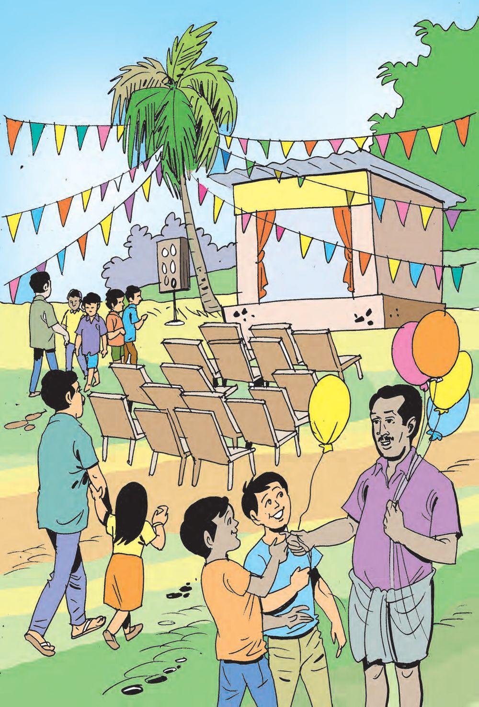
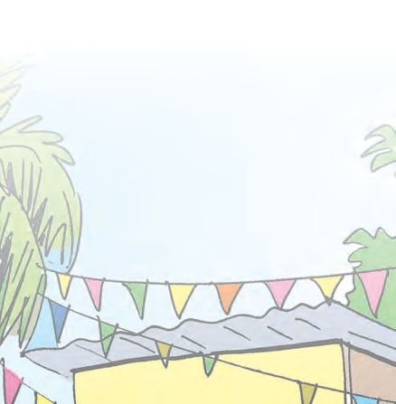
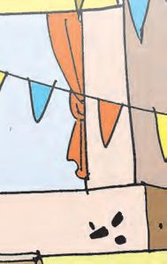
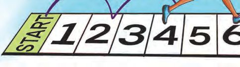
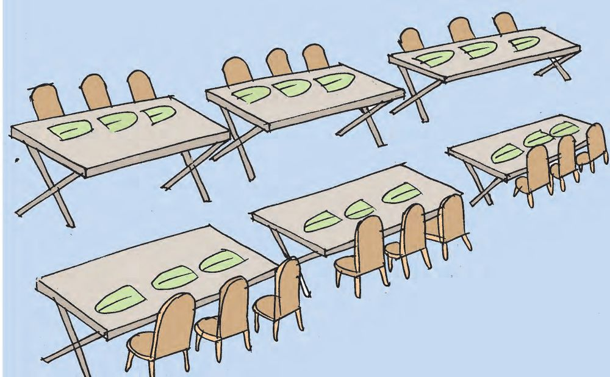
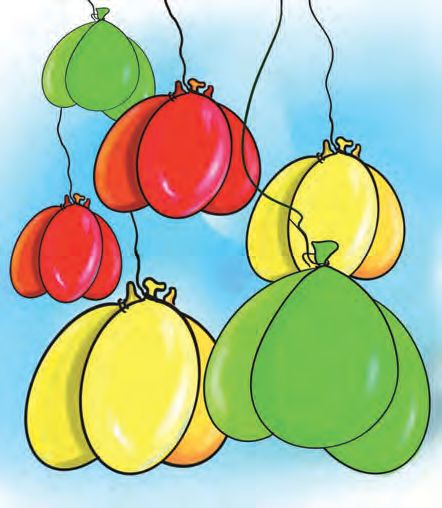
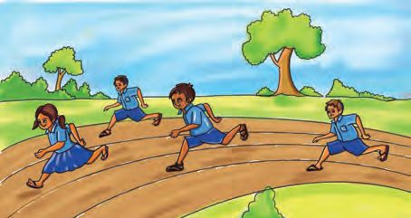
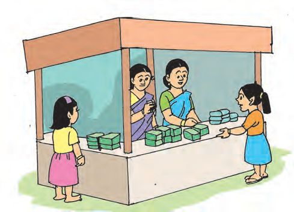
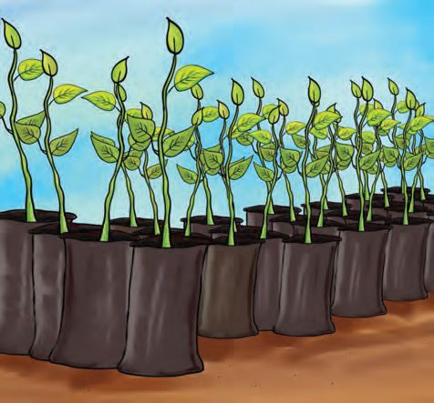
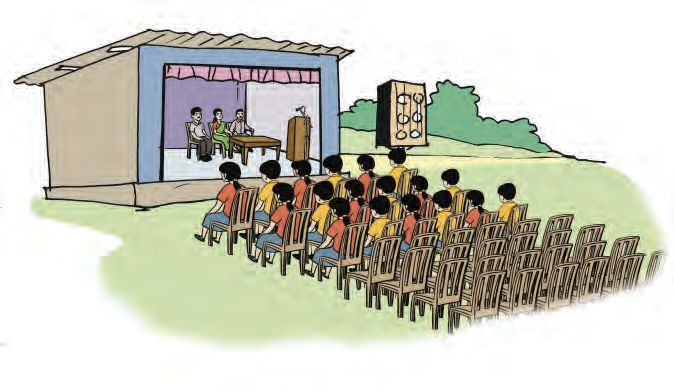

6
കൂ ി . . . കൂ ി ാേമാ
ൂ ി
വം



6
കൂ ി . . . കൂ ി ാേമാ
ൂ ി
വം



ാൻേഡർഡ് - III
ഗണിതം
ാേമാ
വം
ന മു ിൽ ാേമാ വം നട ുകയാണ്. കു ികൾ ായി വിവിധ മ ര ൾ ഉ ്. കളം ചാടി ട ു കളിയിൽ അനുവും അലനും മ രി ു ു ്.
വരയിൽ ചവി ാെത ഒ ിടവി കള ളിേല ാണ് അനു ചാടു ത്. ചാടു കള ളിെല െന ി യാണ് സ ാനമായി കി ുക. അനു ചാടിയ കള
ൾ
് നിറം െകാടു
ൂ...
അലൻ മ രി ു മുതിർ കു ികളുെട മ ര ിൽ നാലിടവി കള ളിേല ാണ് ചാേട ത്. അവിെട 5 വീതം െന ി യു ്. പ ിക പൂർ
ിയാ
ാം:
ചാ ം
1
അനുവിന് കി ിയ െന ി
2
അലന് കി ിയ െന ി
5
ക ിസ് മ
3
4
5
6
ത്. പ
്
രം
ക ിസ് മ ര ടീമാണ് മ ര എ
2
േപരാണ് മ
ിന് ഒരു ടീമിൽ ര ിനു ായിരു ത്. രി ത് ? 76
ു േപരാണു


കൂ ി ... കൂ ി
ഉ ഭ
ണം
ചി ം േനാ
ൂ...
എ േപർ
്ഭ
എ
ണം കഴി
െനയാണ് കണ
ഒരു േമശയിൽ എ എ
േമശകളു
ആെക എ
ാ
ാനു
ഇല ഇ ി ു
ിയത് ?
ഇലയു
്?
്?
േപർ
ു
ഇലയി ി ു
ഒരു േമശ കൂടി ഇ ാൽ എ േപർ
്?
് ഇല ഇടാം ?
77
്?
ൂ ി


ഗണിതം
ാൻേഡർഡ് - III
ബലൂണുകൾ ഒേര നിറമു മൂ ു ബലൂൺ വീതം ഒരുമി ് തൂ ിയി ിരി ു ത് ക ിേ ?
ചി ം േനാ എഴുതുക.
ആെക എ എ
ി ഓേരാ നിറ
ിലുമു
ബലൂൺ ?
െനയാണ് കണ
ാ
ിയത് ?
78
ആെക എ
ബലൂൺ ?
ബലൂണിെ
എ
3+3
23
ം പ ികയിൽ
6


പ ിക പൂർ
93 =
ിയാ
3
ര ് തവണ 3
23
6
3+3+3+ 3+ 3
അ ് ാവശ ം 3
53
15
100 3 = 300
102 3 = 306
............................ 110 3 = ......... 120 3 = ......... 12 3 =
1×3 3+3
103 3 = .........
11 3 =
ൂ ി
ൂ...
101 3 = 303 10 3 =
കൂ ി ... കൂ ി
............................
79
ഞാൻ കണ ാ ിയ രീതി.

ഗണിതം
എ
ാൻേഡർഡ് - III
െനെയാെ
പറയാം ? ര
് മൂ ുകൾ േചർ ത് 2×3
6
മൂ ിെ ഇര ി
ഇര ികൾ കെ 3െ
ഇര ി
4െ
ഇര ി
5െ
ഇര ി
10 െ
ഇര ി
20 െ
ഇര ി
25 െ
ഇര ി
50 െ
ഇര ി
100 െ
ഇര ി
ര
ുതവണ മൂ ്.
മൂ ിെ ര ് മട ്
ൂ 23
3+3
പ ികയിൽ നി ് ഞാൻ മന ിലാ
ിയത്.
80
6



കൂ ി ... കൂ ി
കുടുംബ
ൂ ി
ീ ാൾ ആദായ വി ന 4 േസാ
ുകൾ
50 രൂപ
്
ഉ ഭ ണ ിനുേശഷം അനു കുടുംബ ീ ാളിേല ് േപായി. അവിെട 4 േസാ ് വീതം പാ ിലാ ുകയാണ്. 5 പാ ് ത ാറാ ണം. എ േസാ ് േവ ി വരും ? ഞാൻ കണ
ാ
റിേല മ
രം
ിയത്.
ഓ മ രം റിേലയിൽ 4 ടീമുകൾ മ രി ു. ഒരു ടീമിൽ 4 േപർ. ആെക എ േപർ മ രി ു ?
3അ
ുകൾ േചർ
സംഖ എ
മൂ ുകൾ േചർ തിന് തുല മാണ് ?
81


ാൻേഡർഡ് - III
ഗണിതം
സ ാനവിതരണം ാേമാ വ ിെല മ ര ളിൽ ഒ ാം ാന ാർ ് 4പ റിൈ കൾ വീതം സ ാനം നൽകണം. 7 മ ര ളാണു ത്. സ ാനം ന ാൻ എ ൈതകൾ േവണം ?
അ ്4 േചർ ാൽ ആറ് 4 േചർ ാൽ
പ
4+4+4+4+4+4
് 4 േചർ ാൽ
5 4 = 20
4+4+4+4+4
പ
് 4 േചർ ാൽ
=
=
14 4 =
16 4 =
18 4 =
20 4 =
15 4 =
13 4 =
82


കൂ ി ... കൂ ി
സമാപന സേ ളനം സേ ളന ല ് കേസര ഇ ിരി ു തു േനാ ൂ... ഒരു വരിയിൽ 6 കേസരയു ്. ആദ െ മൂ ുവരിയിൽ കു ികൾ ഇരു ു. എ കു ികളാണ് ഇരു ത് ?
6+6+6
അടു
3×6
=
ആറു വരിയിൽ എ
=
േപർ
് ഇരി
ാം ?
=
=
അവിെടയും കു ികൾ ഇരു ു. കേസരകൾ നിറ കു ികൾ ? ഞാൻ കണ
ാ
ിയ രീതി.
ഇനി 10 വരികൾ നിറയാനു േപർ ുകൂടി ഇരി ാം ? സേ ളന
ല
ു ആെക എ മെ ാരു രീതി.
്. അേ ാൾ എ
് ആെക എ
േപർ 83
് ഇരി
ാം ?
ൂ ി

ഗണിതം
ഗുണി
ാൻേഡർഡ് - III
ാം... പ ിക പൂർ 1
2
3
4
ിയാ
ാം...
5
6
7
8
9
10
1 12
2 12
3 4
12
5 6
12
കൂ ിയാലും ഗുണി ാലും 1+1 = 2 11 = 1 2+3 = 5 23 = 6 2+3+4 = 9
ഇവിെട സംഖ കൾ കൂ ുേ ാഴും ഗുണി ുേ ാഴും വത സംഖ കളാണ് ഉ രമായി കി ു ത്. കൂ ുേ ാഴും ഗുണി ുേ ാഴും ഒേര ഉ രം കി ു സംഖ കൾ കെ ാേമാ ?
2 3 4 = 24
ഓേരാ ും േനാ
ൂ പൂരി ി
ൂ.
23 = 6
2 4 = .....
2 5 = .....
2 6 = .....
4 3 = 12
4 4 = .....
4 5 = .....
4 6 = .....
8 3 = 24
8 4 = .....
8 5 = .....
8 6 = .....
നി
ൾ കെ
ിയ ബ
ം എ ാണ് ? 84


കൂ ി ... കൂ ി
ൂ ി
ഏെതാെ സംഖ കൾ ത ിൽ ഗുണി ുേ ാഴാണ് 24 കി ു ത് ?
ഏെതാെ സംഖ കൾ ത ിൽ ഗുണി ുേ ാഴാണ് 12 കി ുക ?
24 1
26 ...... 1
12
24
...... ...... 3 ...... 2
20 െന ഇതുേപാെല എഴുതൂ...
കള
ൾ പൂർ
ിയാ
ൂ... 20 .......
6 .......
30 .......
15 .......
60
....... 1
12 .......
വിലയിരു
ൽ
വർ
ന
ൾ
1. അനു സൂ ർമാർ ിെല ി. അ ് േപന േവണം. ഒരു േപന ് 6 രൂപ. 6 എ മു ഒരു പാ ിന് 30 രൂപ. ഒരു പാ ് േപന വാ ിയാൽ അനുവിന് എ ാണ് േന ം ?
85


2.
എ.
ഗണിതം
ാൻേഡർഡ് - III
ി
രം.
്മ ി
് കളിയിൽ ഒരു ഓവറിൽ ആറ് തവണയാണ് പ ് എറിയുക. ട ി - ട ി കളിയിൽ ഒരു ടീം എ തവണ പെ റിയണം ?
ബി. 50 ഓവറിെ ഏകദിന മ
േചർ ് എ
3. ആർ
ര ിൽ ര ് ടീമുകളും തവണ പ ് എറിയും ?
ാണ് കൂടുതൽ റൺസ് ?
ഒരു കളിയിൽ അലനും, കൂ ുകാരനും േനടിയ റൺസാണ് പ ികയിൽ കാണി ിരി ു ത്. അലൻ
കൂ ുകാരൻ
2 സിക്സർ
26
5 േഫാർ
54
3 േഫാർ
4 ഡബിൾ
42
2 ഡബിൾ
5 സിംഗിൾ
51
2 സിംഗിൾ
4 സിക്സർ
12
ആരാണ് കൂടുതൽ റൺെസടു ത് ?
എ കൂടുതൽ ?
ഒരു ഓവറിൽ 6 സിക്സർ അടി ാൽ എ റൺസ് കി ും ?
86
ഭാരത
ിെ
ഭരണഘടന
ഭാഗം IV ക
മൗലിക കർ
വ
ൾ
51 ക. മൗലിക കർ വ ൾ - താെഴ റയു വ ഭാരത കർ വ ം ആയിരി ു താണ് : (ക)
ഭരണഘടനെയ അനുസരി ുകയും അതിെ െളയും േദശീയപതാകെയയും േദശീയഗാനെ
ിെല ഓേരാ പൗരെ യും
ആദർശ െളയും ാപന യും ആദരി ുകയും െച ുക;
(ഖ) സ ാത ിനുേവ ിയു ന ുെട േദശീയസമര ിന് േചാദനം നൽകിയ മഹനീയാദർശ െള പരിേപാഷി ി ുകയും പിൻതുടരുകയും െച ുക; (ഗ)
ഭാരത ിെ പരമാധികാരവും ഐക വും അഖ സംര ി ുകയും െച ുക;
(ഘ) രാജ െ കാ ുസൂ െ ടുേ ാൾ അനു ി
തയും നിലനിർ
ുകയും
ി ുകയും േദശീയേസവനം അനു ി ുവാൻ ആവശ ുകയും െച ുക;
(ങ) മതപരവും ഭാഷാപരവും ാേദശികവും വിഭാഗീയവുമായ ൈവവിധ ൾ തീ തമായി ഭാരത ിെല എ ാ ജന ൾ ുമിടയിൽ, സൗഹാർദവും െപാതുവായ സാേഹാദര മേനാഭാവവും പുലർ ുക, ീകളുെട അ ിന് കുറവു വരു ു ആചാര ൾ പരിത ജി ുക; (ച)
ന ുെട സ ി സം ാര ിെ നിലനിറു ുകയും െച ുക;
സ
മായ പാര ര െ
വിലമതി ുകയും
(ഛ) വന ളും തടാക ളും നദികളും വന ജീവികളും ഉൾെ ടു പരി ിതി സംര ി ുകയും അഭിr ിെ ടു ുകയും, കാരുണ ം കാണി ുകയും െച ുക; (ജ)
ശാ ീയമായ കാഴ്ച ാടും മാനവികതയും, അേന ഷണ ിനും ഉ മേനാഭാവവും വികസി ി ുക;
(ഝ) െപാതുസ െച ുക;
് പരിര
ി
rത ാ ഉ ജീവികേളാട്
ിനും പരിഷ്കരണ
ുകയും ശപഥം െച ് അ മം ഉേപ
ി
ുകയും
(ഞ) രാ ം യ ിെ യും ല ാ ിയുെടയും ഉ തതല ളിേല ് നിര രം ഉയര വ ം വ ിപരവും കൂ ായതുമായ വർ ന ിെ എ ാ മ ല ളിലും ഉൽr ത ുേവ ി അധ ാനി ുക; (ട)
ആറിനും പതിനാലിനും ഇട ് ായമു തെ കു ിേ ാ തെ സംര ണ യിലു കു ികൾേ ാ, അതതു സംഗതി േപാെല, മാതാപിതാ േളാ ര ാകർ ാേവാ വിദ ാഭ ാസ ിനു അവസര ൾ ഏർെ ടു ുക.

കു ികളുെട അവകാശ ൾ ിയമു
കു ികേള,
നി ൾ ു അവകാശ െളെ ാെമ ് അറിേയ തിേ ? അവകാശ െള ു റി ു അറിവ് നി ളുെട പ ാളി ം, സംര ണം, സാമൂഹികനീതി എ ിവ ഉറ ാ ാൻ േ രണയും േചാദനവും നൽകും. നി ളുെട അവകാശ ൾ സംര ി ാൻ ഇേ ാൾ ഒരു ക ീഷൻ വർ ി ു ു ്. േകരള സം ാന ബാലാവകാശസംര ണ ക ീഷൻ എ ാണ് അതിെ േപര്. എെ ാമാണ് നി ൾ ു അവകാശ ൾ എ ു േനാ ാം.
സംസാര ിനും ആശയ കടന മു സ ാത ം
ിനു
ജീവെ യും വ യും സംര ണം
ിെ
ിസ ാത
അതിജീവന ിനും പൂർ നുമു അവകാശം
ജാതി-മത-വർഗ-വർ ചി കൾ തീത മായി ബഹുമാനി െ ടാനും അംഗീകരി െ ടാനുമു അവകാശം
മാനസികവും ശാരീരികവും ൈലംഗി കവുമായ പീഡന ളിൽ നി ു സംര ണ ിനും പരിചരണ ിനുമു അവകാശം
വികാസ
ി
പ ാളി
ബാലേവലയിൽനി ും ആപൽ ര മായ േജാലികളിൽനി ുമു േമാചനം
ൈശശവവിവാഹ ണം
സ ം സം ാരം അറിയു തിനും അതനുസരി ് ജീവി ു തിനുമു സ ാത ം
ിനു
അവകാശം
ിൽനി ു
േകരള സം
സംര
ബ
െ േട
അവഗണനകളിൽനി ു
സൗജന വും നിർബ ഭ ാസ അവകാശം
കളി
േ ഹവും സുര യും നൽകു കുടുംബവും സമൂഹവും ലഭ മാകാനു അവകാശം
ാനും പഠി
സംര
ിതവുമായ വിദ ാ
ാനുമു
നി ളുെട ചില ഉ
ണം
അവകാശം
രവാദിത
ൾ
ൂൾ, െപാതുസംവിധാന ൾ എ ിവ നശി ി ാെത സംര ി ുക. ൂളിലും പഠന വർ ന ളിലും rത നി പാലി ുക. ൂൾ അധികാരികെളയും അധ ാപ കെരയും മാതാപിതാ െളയും സഹപാഠി കെളയും ബഹുമാനി ുകയും അംഗീകരി ുകയും െച ുക. ജാതി-മത-വർഗ-വർ ചി കൾ തീ തമായി മ ു വെര ബഹുമാനി ാനും അംഗീകരി ാനും സ രാവുക. വിലാസം:
ാന ബാലാവകാശസംര
ണ ക ീഷൻ
ീ ഗേണഷ്, ി.സി. 14/2036, വാൻേറാസ് ജംങ്ഷൻ, േകരള യൂണിേവഴ്സി ി പി.ഒ, തിരുവന പുരം – 34 േഫാൺ 0471 – 2326603 ഇ- െമയിൽ childrights.cpcr@kerala.gov.in, rte.cpcr@kerala.gov.in െവബ്ൈസ ് : www.kescpcr.kerala.gov.in ൈചൽഡ് െഹൽ ് ൈലൻ - 1098, ൈ ം േ ാ ർ - 1090, നിർഭയ – 1800 425 1400 േകരള െപാലീസ് െഹൽ ് ൈലൻ - 0471 – 3243000/44000/45000 online R.T.E Monitoring : www.nireekshana.org.in